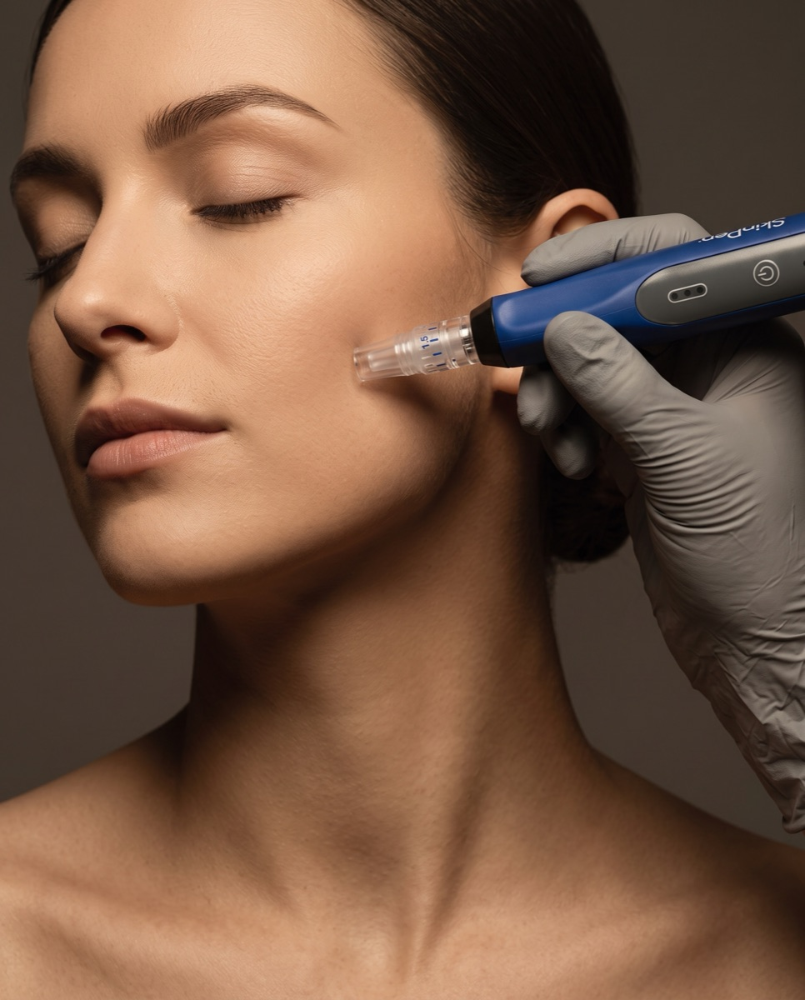

Mikronakłuwanie SkinPen® w Płocku – odnowa skóry i redukcja blizn
Spłycenie zmarszczek, ujędrnienie skóry, redukcja rozstępów i blizn – to tylko kilka problemów skórnych, z którymi z łatwością poradzi sobie zabieg mikronakłuwania urządzeniem SkinPen®. Pobudzamy produkcję kolagenu i przeprowadzamy ogólną rewitalizację cery, wtłaczając w głębsze warstwy skóry preparaty o wysoko skoncentrowanych składnikach odżywczych.
Cena już od:
699
zł
Dostępne dla tego zabiegu na recepcji w salonie
Zabiegi Hi-Tech
Mikronakłuwanie SkinPen® w Płocku – jak działa i dla kogo jest ten zabieg?
Czy wiesz, że SkinPen® to jeden z najpopularniejszych zabiegów w naszym instytucie? Jego celem jest pobudzenie produkcji kolagenu w skórze, ogólna rewitalizacja i poprawa kondycji cery, poprzez wtłoczenie w głębsze warstwy skóry preparatów zawierających wysoko skoncentrowane składniki odżywcze.
Mikronakłuwanie skóry (microneedling) urządzeniem SkinPen® świetnie sprawdza się w radzeniu sobie z problemami skórnymi takimi jak: zmarszczki, wiotka i cienka skóra, widoczne pory, rozstępy, blizny, łysienie. Zabiegowi poddawana jest głównie skóra twarzy, szyi oraz dekoltu — może być również stosowany w przypadku delikatnej skóry pod oczami.
FAQ
Najczęściej zadawane pytania
Czy zabieg boli?
Nie musisz się tego obawiać. W pierwszej kolejności kosmetolog znieczuli miejsce zabiegowe specjalnym preparatem. Po chwili, gdy znieczulenie zacznie już działać, rozpoczyna się zabieg mikronakłuwania.
Ile zabiegów potrzeba, żeby zobaczyć efekty?
Pierwsze efekty są widoczne już po jednorazowej sesji, jednak dla uzyskania możliwie najbardziej zadowalających efektów zaleca się skorzystanie z serii minimum 3–4 zabiegów.
Jak głębokie są nakłucia?
SkinPen® umożliwia wykonanie nakłuć o głębokości od 0,5 mm nawet do 2,5 mm, w zależności od problemu, z jakim zmaga się skóra. Przy bliznach, rozstępach czy cellulicie nakłucia są głębsze, sięgając skóry właściwej — przy ujędrnianiu, redukcji sebum czy zmian trądzikowych są płytsze.
Jak przygotować się do zabiegu?
Nie musisz się specjalnie przygotowywać. Pamiętaj tylko o tym, żeby w dniu wykonywania mezoterapii Twoja skóra była czysta i pozbawiona ran czy wykwitów.
Co robić po zabiegu?
Przez 2 dni po zabiegu możesz zaobserwować u siebie niewielkie zaczerwienienie i obrzęk — to całkowicie normalne i ustąpi po 48h. Przez najbliższe 3 dni zrezygnuj z makijażu i smaruj skórę preparatami łagodzącymi z alantoiną lub pantenolem.
Dla jakich problemów skórnych jest ten zabieg?
Zmarszczki, wiotka i cienka skóra, widoczne pory, rozstępy, blizny (również potrądzikowe i pooperacyjne), a nawet łysienie — mikronakłuwanie sprawdza się w szerokim spektrum problemów skórnych.
Technologia mikronakłuwania
SkinPen®. Certyfikowany przez FDA złoty standard microneedlingu.
SkinPen® to pierwszy na świecie, certyfikowany przez FDA system do medycznego mikronakłuwania skóry — absolutny lider w bezkompromisowej walce z bliznami, rozstępami oraz głębokimi oznakami starzenia. W INSTYTUTem.™ pracujemy wyłącznie na oryginalnych, sterylnych kartridżach SkinPen®, gwarantując 100% bezpieczeństwa medycznego.
Zasada działania
Tysiące precyzyjnych nakłuć
Pulsujące igły delikatnie nakłuwają naskórek, uruchamiając kaskadę naturalnych procesów naprawczych: silną produkcję nowego kolagenu, elastyny oraz głęboką przebudowę tkanki strukturalnej.
Aplikacja składników
Wtłaczanie preparatów odżywczych
Specjalnie dobrane substancje odżywcze i nawilżające są wtłaczane cieniutkimi igiełkami bezpośrednio do głębokich warstw skóry, poprawiając przy tym mikrokrążenie podskórne.
Głębokość dopasowana do celu
Nakłucia od 0,5 do 2,5 mm
Przy bliznach, rozstępach czy cellulicie nakłucia sięgają głębiej, do skóry właściwej — przy ujędrnianiu, redukcji sebum czy zmian trądzikowych są płytsze.
Bezpieczeństwo medyczne
Oryginalne, sterylne kartridże
Pracujemy wyłącznie na oryginalnych kartridżach SkinPen®, w pełni bezpiecznych i bezinwazyjnych dla naskórka — najlepsze efekty osiągamy w seriach zabiegów.

Przejrzysty cennik
Proste ceny dopasowane do obszaru i celu zabiegu.
Cennik dzieli się na obszar zabiegowy i cel terapii (blizny, rozstępy, odmłodzenie) — a cena i czas trwania są znane od razu, bez ukrytych kosztów i niespodzianek podczas płatności.
Wskazania do zabiegu
Ten zabieg pomoże, jeśli zależy Ci na:
Spłyceniu zmarszczek i poprawie jędrności skóry
Napięciu owalu twarzy i wygładzeniu skóry twarzy, szyi oraz dekoltu
Redukcji cellulitu, rozstępów, blizn potrądzikowych i pooperacyjnych
Redukcji przebarwień i ujednoliceniu kolorytu cery
Regulacji wydzielania sebum i pozbyciu się zaskórników czy zmian trądzikowych
Nawilżeniu i odżywieniu głębokich warstw skóry
Opóźnieniu procesów starzenia się skóry
Cennik
Ile kosztuje mikronakłuwanie SkinPen® w Płocku?
Cena zależy od obszaru zabiegowego oraz celu terapii. Poniżej sprawdzisz dokładny cennik.
Konsultacje
Pakiet PowitalnyPromocja
149 zł
Dermokonsultacja · 35 min
149 zł
ZarezerwujPrezent na start: jeśli po konsultacji zdecydujesz się na rekomendowany zabieg (w tym samym dniu lub w ciągu 14 dni), cała kwota 149 zł zostanie odliczona od jego ceny. Ekspercki plan opieki otrzymujesz w prezencie!
Wizyta kontrolna · 15 min
0 zł
Zabieg
od 699 zł
Blizny potrądzikowe (twarz) · 45 min
od 699 zł
ZarezerwujCiało — rozstępy i blizny · 45 min
od 799 zł
ZarezerwujTwarz + szyja + dekolt (standard) · 55 min
1049 zł
ZarezerwujTwarz + szyja + dekolt (+Pixel Peel) · 1 godz. i 5 min · Połączenie z zaawansowanym peelingiem medycznym.
1499 zł
ZarezerwujZalecenia zabiegowe i przeciwwskazania
Postępowanie przed i po zabiegu
- Ciąża i karmienie piersią
- Stany zapalne skóry, infekcje wirusowe, grzybicze i bakteryjne
- Oparzenia i trądzik różowaty
- Przyjmowanie leków przeciwzakrzepowych oraz niesteroidowych leków przeciwzapalnych
- Anemia i cukrzyca
- Nie musisz się specjalnie przygotowywać — pamiętaj tylko, żeby w dniu zabiegu Twoja skóra była czysta i pozbawiona ran czy wykwitów.
- Ogranicz dotykanie rękami miejsc, które były poddane nakłuciom.
- Przez najbliższe 3 dni zrezygnuj z makijażu.
- Unikaj środków drażniących i wysuszających skórę, zwłaszcza zawierających alkohol.
- Odpoczywaj i unikaj intensywnej aktywności fizycznej — zrezygnuj z sauny, solarium i gorących kąpieli.
- Przez kilka tygodni unikaj promieniowania słonecznego i używaj kremów z wysokim filtrem.
- Smaruj skórę preparatami łagodzącymi z alantoiną lub pantenolem.